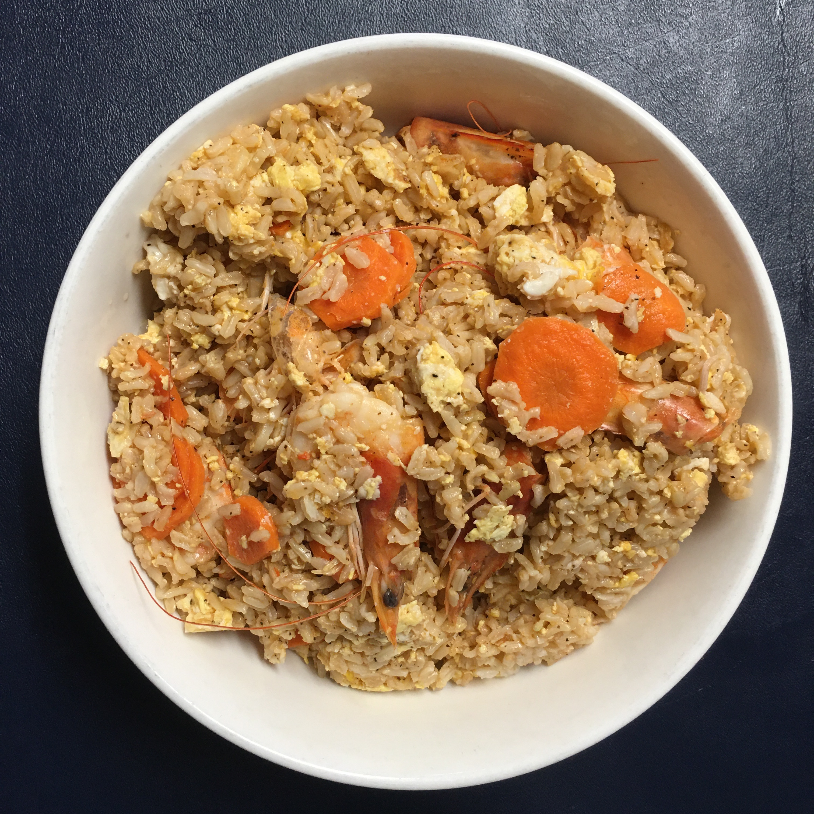
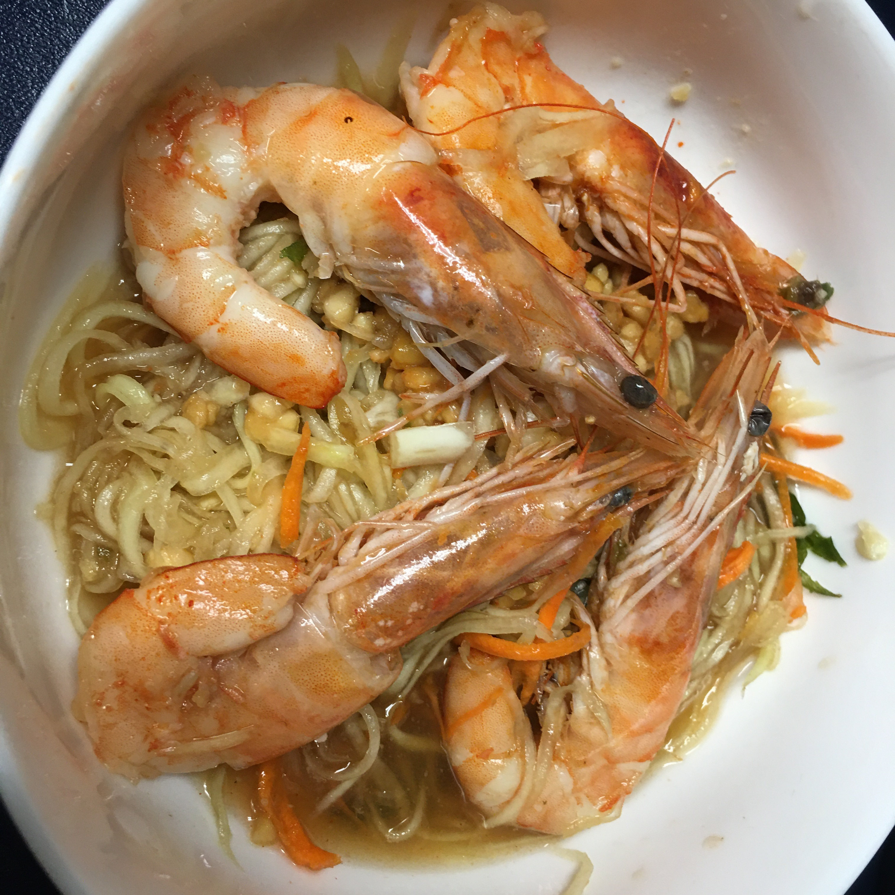
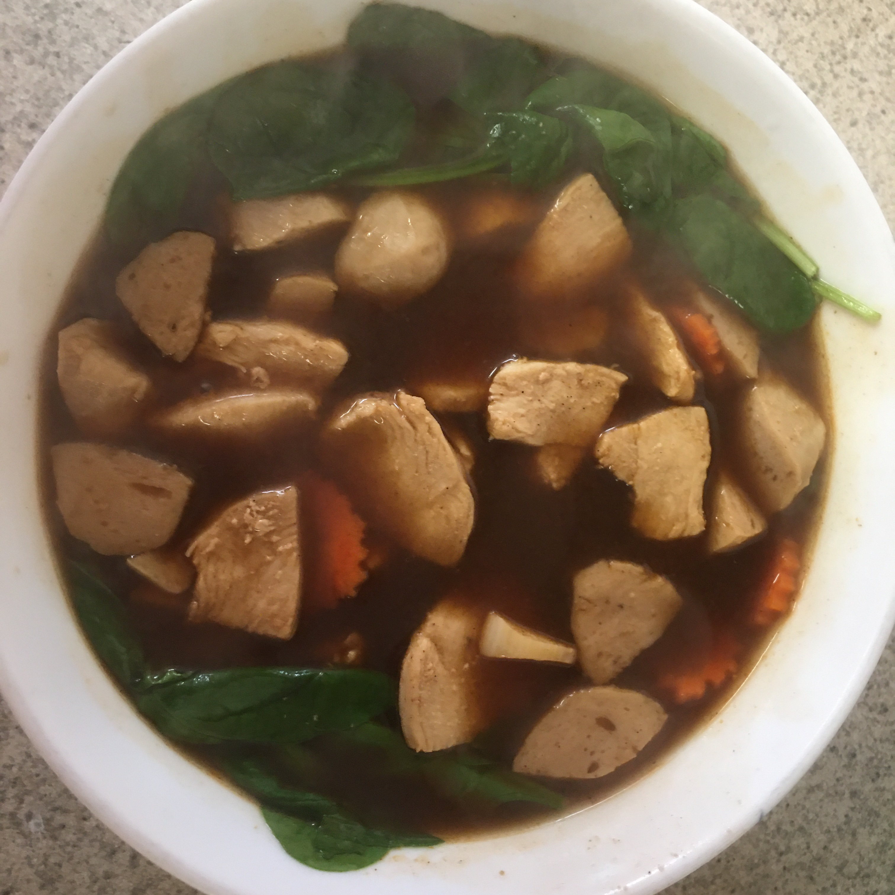

HI! The reader.My name is Sirikalaya Siripattarakul. I grow up in a small town in Bangkok.
I have many hobbies in my life such as collecting stamps, playing basketball, reading and so on. But now when I move to study n the USA. I change my hobby that I can do it.
My hobby is cooking now. I learn to cook from Youtube and ask my friend if they cook. Why because when I came here any Thai restaurant will adapt tests for American people.
It is not a real test same in Thailand so that is why I like to cook. Although before I don't like to cook in Thailand.
It has many questions for my friend. Like how can you do that? Before I told you I don't like to cook but now it's my favorite hobby. How can I start it? First thing I make the easy food that I want to eat. Don't think like I make a fried egg. LOL The first thing that I make. Can you guess the Thai food I gonna make it? It fried rice with shrimp.
credit by NUTCHANART_CH
credit by NUTCHANART_CH
Next time I will Make American fried rice, I never tried to make it. Because it different sauce to use. In my
country, this is my favorite fried rice.
When I came to the USA. Why don't have american fire rice? LOL
credit by https://stringfixer.com/
I learn from youtube chanel example Fried Rice with Shrimp , Recipe Firedrice and Prawn Firedrice
1.ThaiFiredrice
2.Papayasalad
3.Thaiboatsoup
